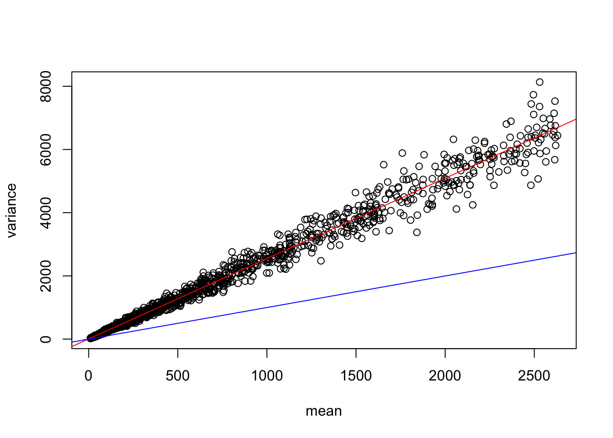
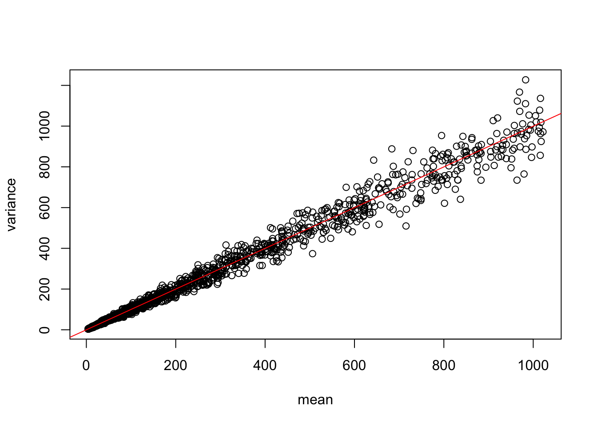
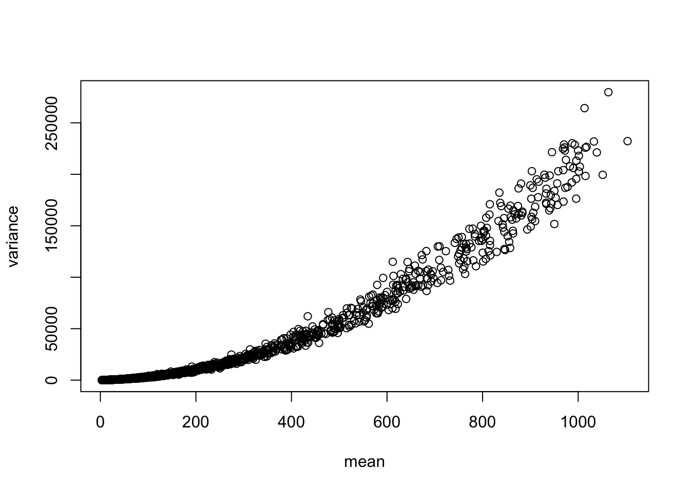
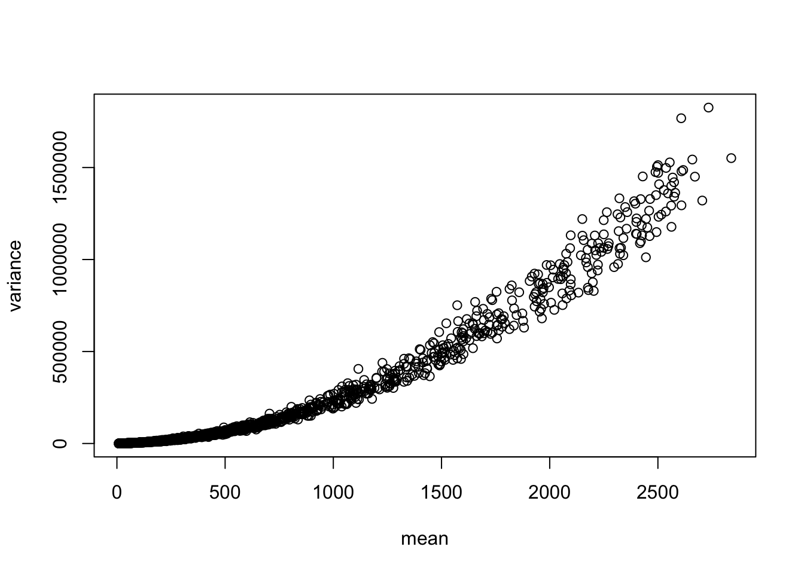
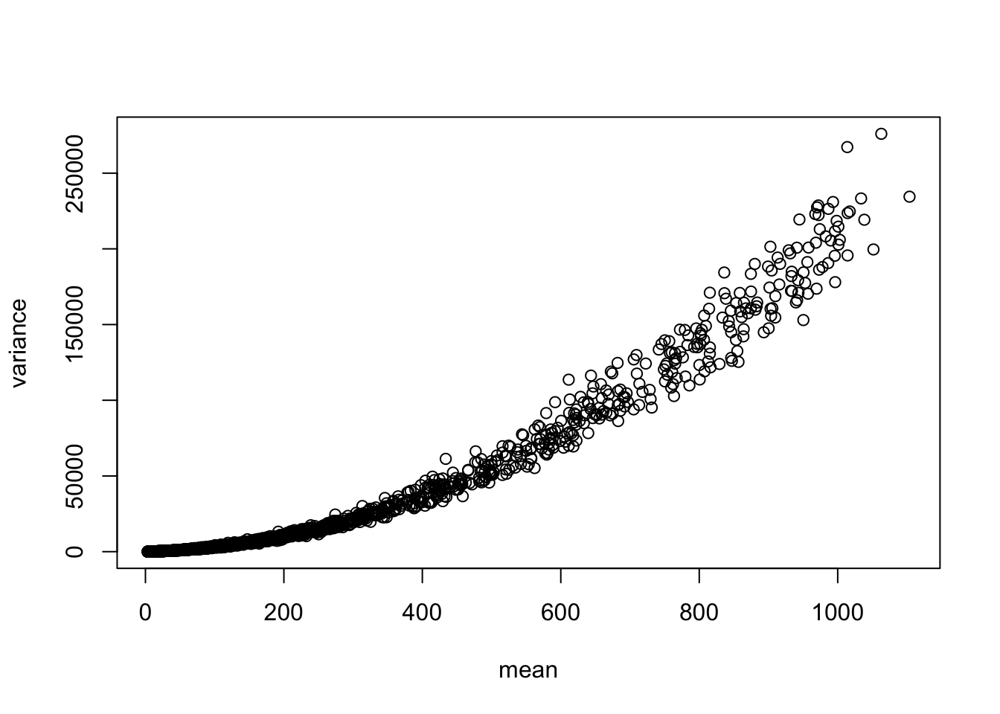
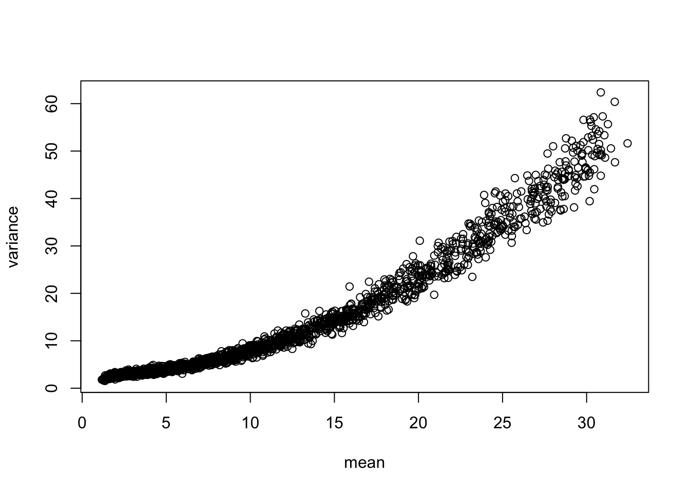

In the QC chapter we have seen a large variability in terms of total transcript/UMI count per cell. This is caused by both biological aspects - some cells make more and/or longer transcripts than others - and by technical aspects - transcripts from some cells have been captured or sequenced with a higher efficiency on average. Put it simply, it means that two very similar cells (same cell type/state, same phase of the cell cycle, same everything) may still look different just because 3000 UMI/reads total were counted for one and 6000 for the other. We say that these two cells are sequenced at a different depth.
This means that the naive comparison of cells can be distorted by this difference in depth: if we were to order cells by the variability of their genes without taking these differences into account, we would order them according to their respective depth and not any other biologically relevant feature.
Normalization is a process that transforms the counts in a way that accounts for these differences, effectively rescaling them so that cells become more comparable. The per-cell scaling constant that is applied to equalize depths is commonly called the size factor.
One of the easiest ways to normalize cells is to divide each cell’s counts by a size factor equal to the sum total of counts (depth), and then multiply by a constant (10K or 1M).
Taking a raw count matrix \(X\) with \(m\) genes and \(n\) cells, and indexing by \(i = \{1, 2, 3, ... ,m\}\) and \(j = \{1, 2, 3, …, n\}\) , the depth-normalized matrix \(X'\) is given by:
This is the depth-normalization as implemented in Seurat.
Different versions of depth normalization are implemented by scuttle in the SingleCellExperiment toolset. There are two main options:
computeLibraryFctors(): naive depth normalization where library sizes are scaled so that across cells their mean is equal to 1 (it is also possible to use the median or geometric mean). This is achieved by simply dividing the library sizes by their mean, then dividing the cells by these size factors. The assumptions behind this method are that there is no imbalanced differential expression between cells, i.e. up-regulation of a set of genes in one cell is matched by down-regulation of another set of cells in any other cell, so that there is no “excess differential expression”. This is the assumption that is used in bulk RNA-seq data analysis, but it is less likely to hold in single-cell data, especially when dealing with non-homogeneous datasets with different cell types and compositions and because of the prevalence of zero counts. This can also be referred to as “proportional fitting” (see below).
computeSumFactors(): normalization by pooling and deconvolution: size factors are estimated by creating a reference “pseudocell” (averaging across all cells), pooling samll groups of cells together aggregating their counts by sum, and dividing the pooled counts by the pseudocell library size. This procedure is repeated iteratively including different cells in each iteration so that, eventually, a linear system of equations can be constructed which allows to derive the per-cell size factor. The advantages over the more naive size factor estimation are twofold: 1) the presence of 0 counts is alleviated by aggregating across cells, and 2) the compositional effects are taken into account by pre-clustering cells and using only cells within a cluster as pseudocell reference. This procedure is computationally more intensive.
5.2 Variance stabilization
As important as it is, depth normalization is not enough to understand the “biological structure” of the data, i.e. to remove the technical confounding effects.
Counts from an RNA-seq experiment normally follow a Negative Binomial or a Poisson distribution depending on the capture and sequencing technology. These distributions arise due to several factors, both intrinsically technical (capture and reverse transcription efficiency in the presence of competition from highly expressed transcripts) and biological (bursty transcription and RNA degradation).
A notable feature of these distribution is that they exhibit a positive mean-variancerelationship: as the mean expression of a gene increases, so does its variance.
This relationship holds even if we apply depth normalization.
Let’s simulate some data to convince ourselves, borrowing from examples in the scran package.
If we simulate counts from a Poisson distribution, we will have - in the un-normalized case - a linear trend where mean = variance:
# simulate Poisson distributed counts for 200 cells, 2000 genes with no structureset.seed(100)ncells <-200ngenes <-2000# Simulate gene means: 2 to the power of a uniformly random number (min 2, max 10)# they will be the lambda parameter for the Poisson distributiongene_means <-2^runif(ngenes, 2, 10)# Simulate countssim <-matrix(rpois(ngenes*ncells, lambda = gene_means), ncol = ncells)# Plot mean and varianceplot(x =rowMeans(sim), y =rowVars(sim), xlab ="mean", ylab ="variance")abline(0, 1, col ="red")
After correction, the trend is still linear, albeit no longer equal (these normalized counts are no longer Poisson distributed):
# Seurat epth normalizationsim_norm =t(t(sim)/colSums(sim))*1e6# Plot mean and variance after normalizationplot(x =rowMeans(sim_norm), y =rowVars(sim_norm), xlab ="mean", ylab ="variance")trend =lm(rowVars(sim_norm) ~rowMeans(sim_norm))abline(trend, col ="red")abline(0, 1, col ="blue")

# scuttle depth normalizationsim_norm =t(t(sim)/(colSums(sim)/mean(colSums(sim))))# Plot mean and variance after normalizationplot(x =rowMeans(sim_norm), y =rowVars(sim_norm), xlab ="mean", ylab ="variance")abline(0,1, col ="red")

The NB distribution can be characterized by two parameters: \(\mu\) and \(\phi\), i.e. mean and dispersion (mu and size in the rnbinom() function).
The dispersion parameter models the fact that in a NB distribution, compared to a Poisson, the variance increases at a higher rate than the mean; in other words the data are “overdispersed”. This dispersion parameter in our simulation is gene-specific and accounts for the aforementioned intrinsic technical variability.
# simulate Negative Binomial distributed counts for 200 cells, 2000 genes with no structureset.seed(100)ncells <-200ngenes <-2000# Simulate gene means: 2 to the power of a uniformly random number (min 2, max 10)# they will be the mu parameter for the NB distributiongene_means <-2^runif(ngenes, 2, 10)# Simulate dispersions (size parameter)dispersions <-10/gene_means +0.2# Simulate countssim_nb <-matrix(rnbinom(ngenes*ncells, mu = gene_means, size =1/dispersions), ncol = ncells)# Plot mean and varianceplot(x =rowMeans(sim_nb), y =rowVars(sim_nb), xlab ="mean", ylab ="variance")

Upon depth normalization:
# Seurat depth normalizationsim_nb_norm_seurat =t(t(sim_nb)/colSums(sim_nb))*1e6# Plot mean and variance after normalizationplot(x =rowMeans(sim_nb_norm_seurat), y =rowVars(sim_nb_norm_seurat), xlab ="mean", ylab ="variance")

# scuttle depth normalizationsim_nb_norm_scuttle =t(t(sim_nb)/(colSums(sim_nb)/mean(colSums(sim_nb))))# Plot mean and variance after normalizationplot(x =rowMeans(sim_nb_norm_scuttle), y =rowVars(sim_nb_norm_scuttle), xlab ="mean", ylab ="variance")

As you can see, removing the depth bias does not take care of removing the trend between variance and mean.
Recall that we need to order genes by their variances because we are interested in using the genes that exhibit the largest (biological) variability, as a way to filter out noise - genes that don’t change along biological axes of variation - and to reduce computational complexity by reducing the initial dimensions e.g. from 30,000 to 2,000.
If we were to select genes only based on their variance, ignoring the mean-variance relationship means we will choose highly expressed genes; among these there will be several housekeeping genes whose expression is unlikely to reveal the biological variability that is useful to separate cells in clusters or order them along differentiation processes.
Variance stabilization is a procedure that tries to uncouple the relationship between variance and mean, so that the selection of highly variable genes does not necessarily include only the most expressed ones. Variance stabilization per se does not account for different depth, so it is usually applied after depth normalization. However, the sctransform procedure operates directly on raw counts, as it includes different depths in its modelling step.
5.2.1 Variance stabilization procedures
There are several methods for variance stabilization, and we can briefly explore/simulate some of them in conjunction with depth normalization:
log1p: this is a simple log2 transformation, where a “pseudocount” of 1 is added to each count before applying the logarithm to account for 0’s.
# NB sqrt variance stabilizationsim_nb_sqrt =sqrt(sim_nb)plot(x =rowMeans(sim_nb_sqrt), y =rowVars(sim_nb_sqrt), xlab ="mean", ylab ="variance")

The sqrt transformation is mostly successful with Poisson distributed counts, but not with NB distributed counts.
PFlog1pPF: this is a term introduced by Booeshaghi et al. (2022), which consists in one round of depth normalization, followed by log1p transformation, and an additional round of depth normalization (or “proportional fitting” as they call it).
sctransform and the function vst(). This is a more complex procedure that implements both normalization and variance stabilization, together with highly variable gene selection (see later). Briefly, a regularized negative binomial regression model is applied to each gene, which allows the introduction of covariates (such as batch labels, sex, age, etc). Then the Pearson residuals (residuals divided by the square root of the expected value) for each gene are taken as “corrected” (normalized and stabilized) gene expression values. The variance of Pearson residuals can be used to rank genes as “highly variable”.
Calculating cell attributes from input UMI matrix: log_umi
Variance stabilizing transformation of count matrix of size 2000 by 200
Model formula is y ~ log_umi
Get Negative Binomial regression parameters per gene